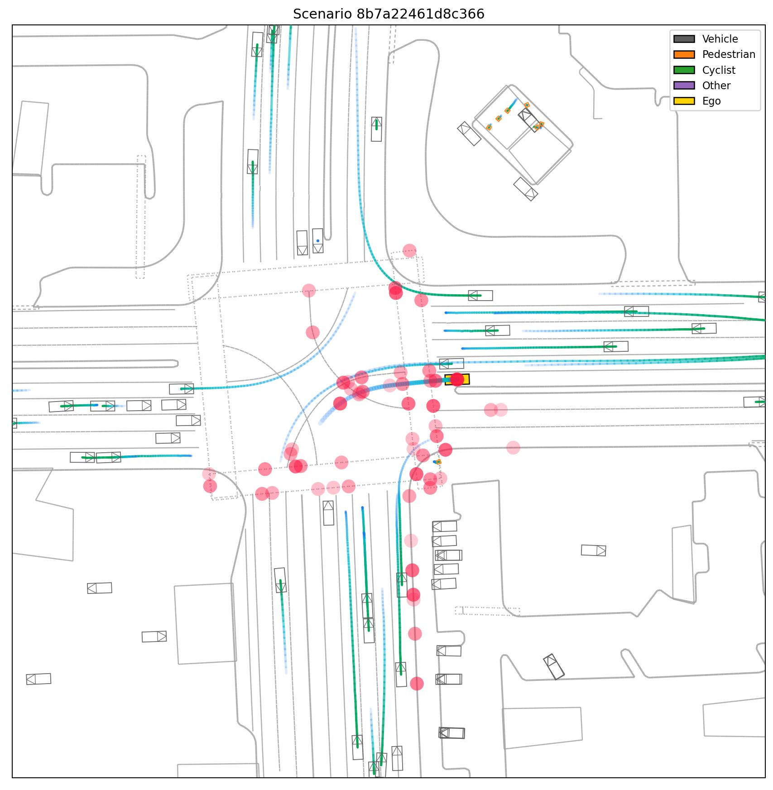
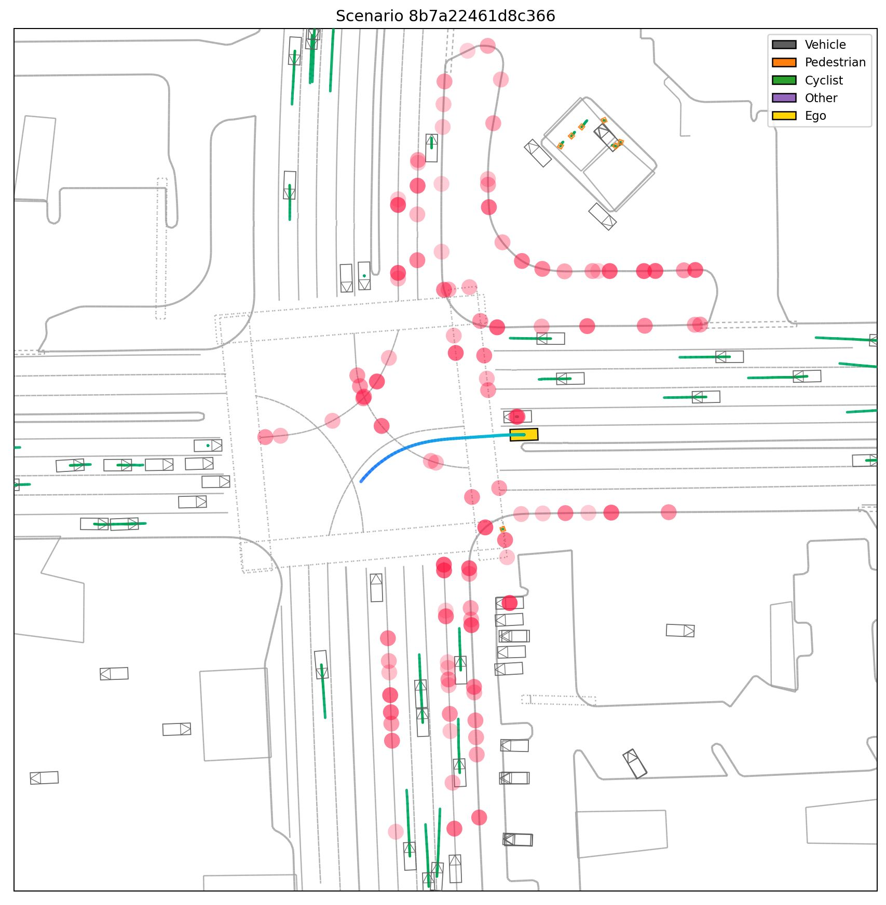
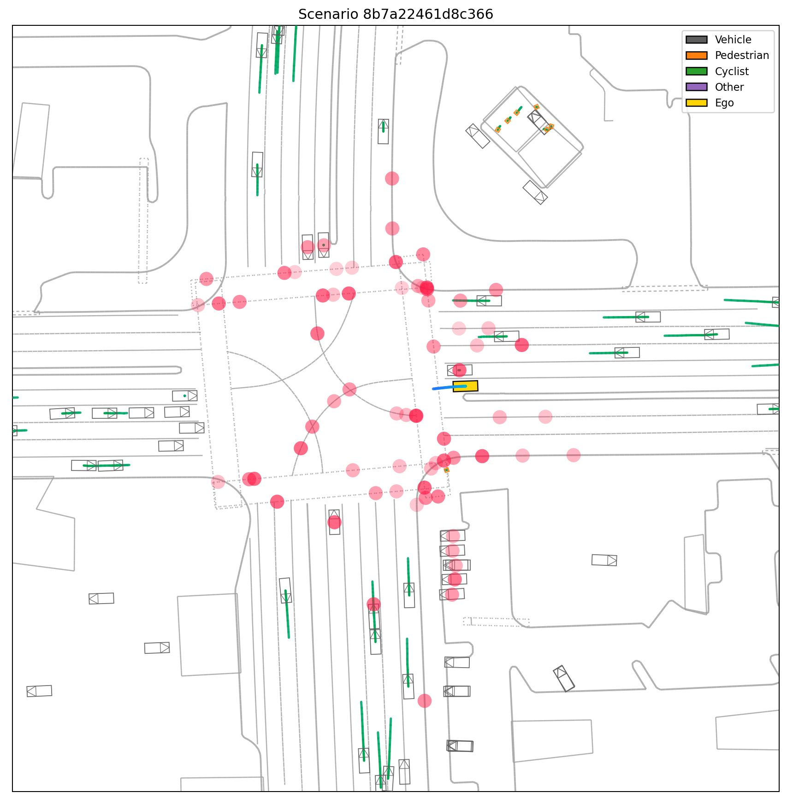
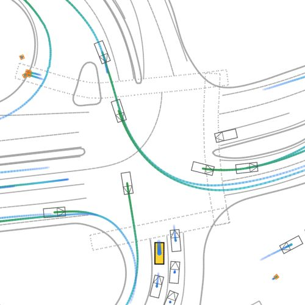
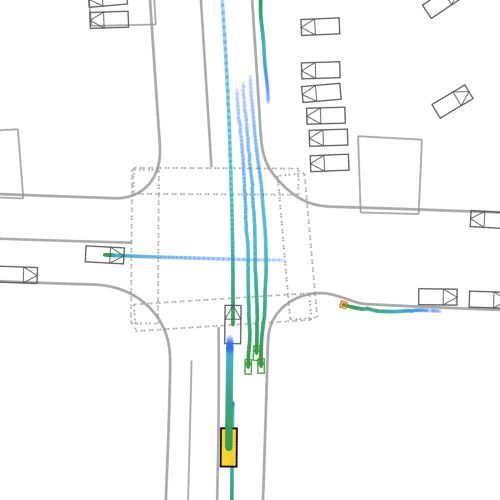
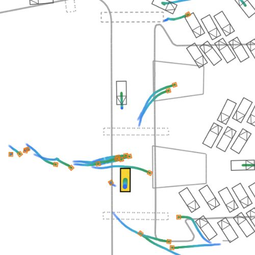

VectorLLM: Language-Controllable Autonomous Driving via Vectorized Scene Grounding
Grounding language in vectorized maps, agents, and trajectories for controllable driving.
Grounding language in vectorized maps, agents, and trajectories for controllable driving.
Language-controlled driving depends on connecting instructions to road geometry and the motion of nearby agents. VectorLLM represents map and motion vectors as discrete tokens in a pretrained language model, so scene structure and text share one sequence. The model uses that sequence to answer questions and generate trajectories. On WOMD and nuScenes, it improves driving question answering and follows held-out changes to scenes and instructions. Comparisons with continuous scene representations show that the discrete token interface contributes to these gains.

For the scene shown, VectorLLM answers questions about the ego vehicle and nearby traffic.
The scene stays the same while the requested maneuver changes. The visualizations show different predicted paths and attended scene locations for the two instructions.


These captions are qualitative examples; scene captioning was not a training task.



VectorLLM converts map polylines and vehicle histories into ordered displacement vectors, then quantizes them into a vocabulary of 1,024 scene tokens. These tokens are added to a pretrained decoder-only language model and placed in the same sequence as the question or instruction.
The model generates a language answer or future trajectory from this shared context. It does not use a separate scene encoder or a scene-to-language projection module. For trajectories, vector tokens are decoded back into positions.
| Evaluation | Metric | VectorLLM | Comparison |
|---|---|---|---|
| WOMD-Reasoning QA | Accuracy within 1 m | 61.0% | Motion-LLaVA: 56.2% |
| nuScenes-QA | Overall accuracy | 63.5% | OpenDriveVLA-0.5B: 58.4% |
| WOMD scene edits | Target reachability | 64.7% | MTR: 53.3% |
| nuScenes language steering | Target reachability | 76.0% | iMotion-LLM: 68.3% |
Scene-edit and language-steering scores are open-loop best-of-six reachability: a predicted path succeeds if it comes within 1 m of the annotated target. nuScenes-QA methods use different input modalities.
The method expects vectorized maps and agent histories. The counterfactual results measure open-loop waypoint reachability, not closed-loop driving safety. Attention maps and scene captions are qualitative examples rather than causal explanations or scored benchmarks.